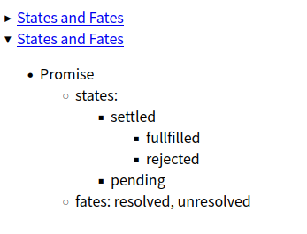
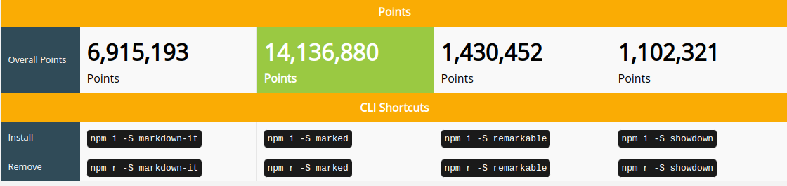

用 Marked(+Gulp) 解析自定义 Markdown 语法
最近发现 Javascript 真的是想干什么都行，第一门语言学 C 绝对是错的，学 Python 也好不到哪里去，只有 Javascript 这种即插即用，可以快速给出反馈的语言才能提供持续的动力。
本文用 Marked 库解析一种特定的语法，动机是我想让 MarkdownIt 生成渲染出特定的 HTML，但它不能污染其他正常的 Markdown 文件，所以只能在渲染系统之外另外再造一个，运作机制是监视外部 Markdown 文件，一有改动就重新编译，这就涉及到 gulp, 机缘巧合我找到这个 gulp 插件: https://github.com/sindresorhus/gulp-markdown ，用的不是 MarkdownIt 而是 Marked，但 star 多，所以就选了 Marked。
Gulp
这个插件的作者似乎是一个很激进的 ES Module 拥护者，据我所知，他写的库都不兼容 CommonJS 体系，因此需要改 gulpfile.js, 参考 https://gist.github.com/sindresorhus/a39789f98801d908bbc7ff3ecc99d99c
- 将 gulpfile.js 改成 gulpfile.mjs
- 将
require改成import
改完后大概如下：
import markdown, {marked} from "gulp-markdown";
...
// Watchers
const watcher = () => {
...
watch("./external/*.md", { ignoreInitial: true }, externalMarked);
};
// one time task
const parallelTask = parallel(
...
externalMarked
);
const _default = series(
parallelTask,
);
export { _default as default};
export { watcher as watch};
const externalMarked = () => {
return src("external/*.md")
.pipe(replace(/^---$.*^---$/ms, ""))
.pipe(markdown())
.pipe(dest("dist/"));
}
Marked: Monkey patching won't help
设置 Gulp 之后，需要修改从 gulp-markdown 引入的 marked object
我的 Markdown 是一个列表，但我希望生成
<details>
<summary>
What is the meaning of life?
<span class="icon">👇</span>
</summary>
<ul><li>
42
</li></ul>
</details>
我的选择有几个：
- 自己写一个，使用 chevrotain
- 用非 JS 语言写一个
- MarkdownIt 插件，最后我发现这才是最合适的选项： https://github.com/markdown-it/markdown-it/blob/master/docs/examples/renderer_rules.md ，很容易做到：To add a wrapper element
- Marked
Marked 的接口比较混乱，目前我依然不能完全理解它的机制，看它文档：https://marked.js.org/using_pro
本来很简单：
const renderer = {
list(body, ordered, start) {
// get first line as summary
const type = ordered ? "ol" : "ul",
startatt = ordered && start !== 1 ? ' start="' + start + '"' : "";
return (
"<details><" +
type +
startatt +
">\n" +
body +
"</" +
type +
"></details>\n"
);
},
};
marked.use({ renderer });
但我忽视了一点，那就是 list 会应用到各个级别，所以结果是
<details><ul>
<li><a href="https://github.com/domenic/promises-unwrapping/blob/master/docs/states-and-fates.md">States and Fates</a><details><ul>
<li>Promise<details><ul>
<li>states: <details><ul>
<li>settled<details><ul>
<li>fullfilled</li>
<li>rejected</li>
</ul></details>
</li>
<li>pending</li>
</ul></details>
</li>
<li>fates: resolved, unresolved</li>
</ul></details>
</li>
</ul></details>
</li>
</ul></details>
原 Markdown 是
- [States and Fates](https://github.com/domenic/promises-unwrapping/blob/master/docs/states-and-fates.md)
- Promise
- states:
- settled
- fullfilled
- rejected
- pending
- fates: resolved, unresolved
各级别列表都封装了一层 <details></details>
这显然是错的，我的设想是，在列表前面加一个 header(## header) ，识别到 header 之后，把整个 list token 解析一遍
这就要求我重写 head
heading(text, level) {
...
}
这样也是不行的，因为当前的 heading 只渲染当前的 token，它抓不到下一个 token 的内容，从接口就可以看出，text 是字符串
另外一个问题: 即使你抓到下一个 token, 你也要想办法告诉引擎不要再去解析下一个 token, 因为我在当前的 heading() 中渲染了
我认为这一个很麻烦的问题，猴子补丁的方法让你受制于人
何况 heading() 的参数只是字符串，所以放弃这个方法
Marked: Extentions
只能用扩展, 自定义分词方法。
结果 Markdown 只能写成这样，@# 标记 <details>, @$ 标记 </details>，这么做的原因是我无法在解析列表之前就把 list 的 token 抓住
@#
- [States and Fates](https://github.com/domenic/promises-unwrapping/blob/master/docs/states-and-fates.md)
- Promise
- states:
- settled
- fullfilled
- rejected
- pending
- fates: resolved, unresolved
@$
代码如下：
const test = {
name: "test",
level: "block",
start(src) {
return src.match(/^-\s+.*$/)?.index;
},
tokenizer(src, tokens) {
const rule = /^(-\s+.*\n+)/;
const match = src.match(rule);
if (match) {
let a = match[1];
let b = a.replace(/^-/, "").trim();
const token = {
type: "test",
raw: a + "\n",
text: this.lexer.inlineTokens(b),
};
return token;
}
return;
},
renderer(token) {
return "<summary>" + this.parser.parseInline(token.text) + "</summary>";
},
};
const begin2 = {
name: "begin2",
level: "block",
start(src) {
return src.match(/@#/)?.index;
},
tokenizer(src, tokens) {
const rule = /^(@#)/;
const match = src.match(rule);
if (match) {
let a = match[1];
const token = {
type: "begin2",
raw: a + "\n",
};
return token;
}
return;
},
renderer(token) {
return "<details>";
},
};
const end = {
name: "end",
level: "block",
start(src) {
return src.match(/^@\$/)?.index;
},
tokenizer(src, tokens) {
const rule = /^(@\$)/;
const match = src.match(rule);
if (match) {
let a = match[1];
const token = {
type: "end",
raw: a + "\n",
};
return token;
}
return;
},
renderer(token) {
return "</details>";
},
};
marked.use({ extensions: [begin2, test, end] });
按道理来说，我应该通过正则匹配抓到 list 的 token 之后，调用引擎的 list 解析器得到结果，但注意到，在 tokenisation 阶段引擎是不知道 list 的 token 的，只能放手，让引擎自己去操作
快速过一遍代码, 文档讲不清楚，源码也很混乱，我是通过调试大概理解了一些：
start()表示分词的时候的 lookahead 的判断一句，比如列表的第一行是/^-\s+.*$/- 匹配第一行之后，返回一个新的 token, 这时候引擎会对比 token 的 raw, 然后将它从源字符串中裁掉，这一点让人很意外，如果你此时将 raw 设置成其他东西，引擎会报错，因为它不知道该剪掉什么
const rule = /^(-\s+.*\n+)/;这一行是消费源字符串，就是我刚说得裁剪参照物，返回的 token, 假设 raw 是aba, 如果原来字符串是aba12345, 那么引擎就剪掉aba剩下12345- 之后调用
this.lexer.inlineTokens(b)解析链接，调用inlineToken，意思是这个 token 是归当前的testblock 管的 - 最后渲染
this.parser.parseInline(token.text), 将字符串[States and Fates](https://github.com/domenic/promises-unwrapping/blob/master/docs/states-and-fates.md)交给引擎渲染
问题还是这样：list 是一个递归结构，这个 test 扩展会被子 list 递归调用
最后一击
根据上一节的分析，本来我想吐槽 Marked 的混乱，没想到最后我还是把结果 hack 了出来，不再需要 @#, #$ 这种奇怪标记

其中一段生成代码：
<details><summary><a href="https://github.com/domenic/promises-unwrapping/blob/master/docs/states-and-fates.md">States and Fates</a></summary><ul>
<li>Promise<ul>
<li>states: <ul>
<li>settled<ul>
<li>fullfilled</li>
<li>rejected</li>
</ul>
</li>
<li>pending</li>
</ul>
</li>
<li>fates: resolved, unresolved</li>
</ul>
</li>
</ul>
语法还是以前的一样：
## Promise
- [States and Fates](https://github.com/domenic/promises-unwrapping/blob/master/docs/states-and-fates.md)
- Promise
- states:
- settled
- fullfilled
- rejected
- pending
- fates: resolved, unresolved
## Promise
- [States and Fates](https://github.com/domenic/promises-unwrapping/blob/master/docs/states-and-fates.md)
- Promise
- states:
- settled
- fullfilled
- rejected
- pending
- fates: resolved, unresolved
过程如下：
- 识别到 heading:
## - 消费列表
- 将列表的第一行拆开，作为
inlineTokens - 将列表的其他行往前移，作为
blockTokens
代码：
const test = {
name: "test",
level: "block",
start(src) {
return src.match(/^##\s+.*$/)?.index;
},
tokenizer(src, tokens) {
const rule = /^(##\s+.*)/;
const match = src.match(rule);
if (match) {
let a = match[1];
let b = src.replace(a, "");
// cut heading + list
let block = src.match(/^(##\s+.*)\n+((?:\s*-\s+.*\n)+)/);
let lines = block[2].split(/\n/);
let firstLine = lines[0];
// remove first line as it's now detached from the list
lines[0] = "";
let sp = lines[1].match(/^(\s+).+/)[1];
let listSrc = lines
.filter((str) => {
return str.trim() !== "";
})
.map((str) => {
return str.replace(" ", "");
})
.reduce((a, b) => {
return a + b + "\n";
}, "");
const summary = firstLine.replace(/^-/, "").trim();
const token = {
type: "test",
raw: block[0] + "\n",
text: this.lexer.blockTokens(listSrc, []),
summary: this.lexer.inlineTokens(summary),
};
return token;
}
return;
},
renderer(token) {
return (
"<details><summary>" +
this.parser.parseInline(token.summary) +
"</summary>" +
this.parser.parse(token.text) +
"</details>"
);
},
};
文档没有提到 blockTokens ，我不确定这样操作字符串也能编过，这样就更加证明了 Marked 引擎是如何消费 token stream 的，扩展只要消费特定的字符串，给它贴上特定的标签，list 是 block 类型，link 是 inline 类型，就相当于把它们从引擎那里买断，渲染的时候自己渲染它们，因为它们已经是当前这个自定义 token 里面的成员，引擎不能过问。这种把 tokenisation 的接口也暴露出来的做法我是头一次见。所以说，Marked 实际上是非常强大的。再看看这一个对比： https://npmcompare.com/compare/markdown-it,marked,remarkable,showdown

Marked 赢麻了
remarkable 则是一个纯 ESM 库，无法直接被 VSCode 运行时使用，但我看到有人把它放在 VSCode 服务端。Marked 无法解析 frontmatter, 这里有个帖子 https://github.com/markedjs/marked/issues/485 讨论解决方法，其中提到 metalsmith，基于 Marked, 可以使用模板。
PS: 实际上可以用 nunjuck https://www.npmjs.com/package/nunjucks-markdown。Metalsmith 只是一个二流的 gulp[1]